产品中心
覆盖爆款洞察、素材管理、成片协同、商品投流、数据复盘、协同底座全链路，
帮内容电商团队找到爆款方向、管好素材成片、投好广告、用数据说话。
适用场景
覆盖内容电商全链路，为不同业务场景提供针对性解决方案
短视频带货
爆款素材快速复制，规模化投流放量
内容种草
优质内容沉淀复用，品牌资产持续积累
直播带货
直播切片管理与二次剪辑，素材高效复用
广告投流
多平台投放管理，数据驱动素材优化
矩阵运营
多账号内容协同，团队创作效率倍增
短剧/短视频制作协同
剧本到成片全流程协作，版本不再混乱可追溯
资产协同管理
素材分类归档存好，团队谁都能用
企业网盘
安全存储与精细权限，企业级内容管理
拍之前就知道什么能火
不再靠猜、不再试错，拍之前先看清方向
拍之前先看方向
拍之前先看看市面上什么在爆，什么卖点在跑量，拍得有方向
拆解学习爆款
不只是看热闹，把爆款拆解成脚本结构、镜头节奏、卖点承接，团队都能学会
用数据指导创作
看看哪些视频在带动哪些商品，下一批拍什么心里门儿清
爆款洞察
围绕视频、商品、达人、店铺等维度快速筛选高参考价值内容
不再靠"我感觉"拍视频。输入一个商品、一个品类或一个达人，系统自动筛出近期跑得最好的内容，谁拍的、什么结构、什么卖点，一目了然。创作前先看数据，拍什么心里有底。
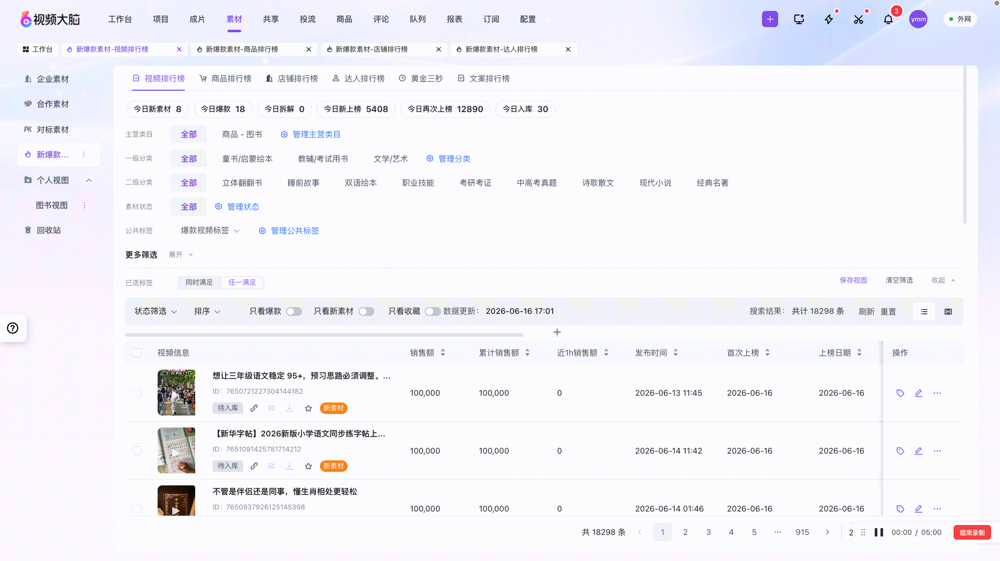
爆款拆解
把爆款视频拆解成脚本结构、镜头节奏、卖点承接
不是只看热闹，而是把爆款"拆明白"。系统支持自主分镜、AI语义分析、场景拆解、卖点承接分析四种方式，把一条爆款拆成可学习的模板。团队新人来了直接照模板学，上手速度翻倍。

脚本与文案沉淀
好脚本永久保存，新人来了直接学
团队积累的好脚本、好文案，以前散落在微信、网盘、个人电脑里，找不着也用不上。现在统一沉淀到系统，标题结构、话术模板、评论区高转化回复，全部可追溯可复用。创作经验不断积累，团队越干越强。

爆款视频榜单
按商品、店铺、达人等维度重排同一批爆款数据
同一批爆款数据，换不同视角看，能发现不同机会。按商品维度看"什么货在爆"，按达人维度看"谁在带量"，按店铺维度看"谁家内容做得好"。多维榜单让团队从各个角度发现创作机会。

素材不再乱糟糟，要用的时候秒找到
让资产价值持续放大，减少重复翻找和重复拍摄
找素材秒定位
不用翻文件夹找半天，直接搜"零食+近景+带货"，秒找到想要的
素材越用越值钱
好素材谁都能看见、谁都能用，拍一次用十次，越用越值钱
重复拍摄更少
同样类型的素材不再重复拍，省下的钱和时间去做新创意
上传即归档
素材上传自动打标签，上传即完成归档
拍完的素材直接传到系统，不需要手动整理文件夹。系统自动识别商品、品类、拍摄人、使用场景等信息，上传的同时就完成分类归档。支持视频、图片、音频、文案多种格式，手机扫码也能传。
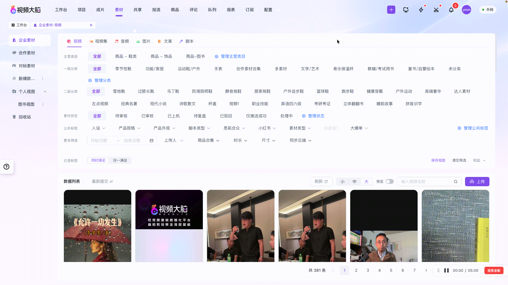
标签化检索
多维筛选，从"找文件"升级为"找可用内容"
不需要记住文件名，也不需要翻文件夹。输入"零食+近景+口播"，秒定位到你想要的素材。按品类、标签、时间、上传人等多维度交叉筛选，找素材的效率提升数倍。

系统存素材
告别"我记得有但找不到"的窘境
所有素材统一分类归档在系统中，用过哪里、效果怎样，一查就知道。不再依赖某个人的记忆，也不再担心换电脑找不到文件。团队素材资产真正变成了可复用的组织能力。

待剪辑清单
一键打包，剪辑效率翻倍
剪辑师不再需要一个个下载素材。选中待剪辑素材一键打包，预览、下载、直接复制到剪映，剪辑工作流程大幅简化。素材清单清晰，剪辑进度可控。

让每条片子都能持续跑量
把成片管理、在线审片、版本迭代、安全分享、投流同步串成闭环。交付不是终点，而是跑量实验的起点，让内容生产从"项目制交付"升级为"资产化运营"。
存：成片状态全链路可见
待审核、已上机、卡审返修、衍生复盘全生命周期管理，责任到人、进度可视，信息不再散落在微信和文件夹里
审：审片意见结构化沉淀
逐帧、逐段批注，@协同、意见留痕，修改要求精确到帧。审核意见不再靠个人记忆，而是变成可追溯的团队资产
投：内容到卖货一键衔接
成片审核通过直接推送至千川、腾讯广告、磁力金牛，无需下载再上传，从"做完视频"到"广告上机"不断档
复：版本与经验都能复用
V1/V2/V3 自动管理，卡审返修一键生成任务，跑量成片快速衍生放大。爆款经验沉淀为可复用的内容资产
成片管理
统一管理不同状态成片，全流程可追溯
视频做完了不是结束，而是新的开始。系统按"待审核→已上机→卡审返修→衍生复盘"管理成片全生命周期，每个状态清晰可见，责任人明确。团队管理者一眼就能知道整体进度，让团队关注的不仅是"做完视频"，更是"这条视频能不能继续卖货"。

在线审片
修改意见直接标在视频上，不再散落在聊天记录里
"3秒处字体太小""15秒卖点没讲清"——不再需要截图画圈发微信。直接打开视频，在对应时间点标记修改意见，精确到帧。被@的人立刻收到通知，修改完标记已处理。所有意见留痕，沟通更清晰，再也不会遗漏。
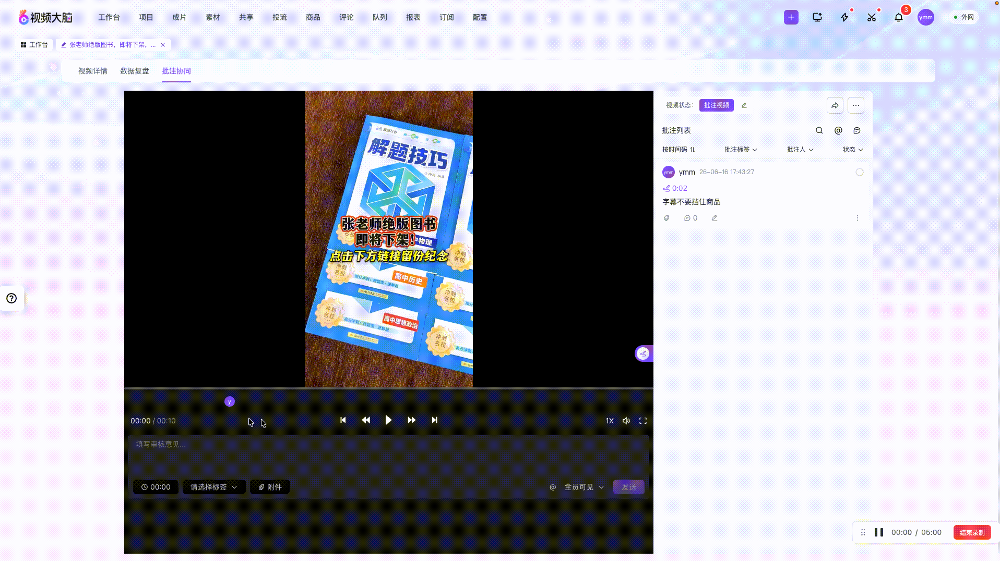
成片撞审
多人并行审核，快速收敛意见
创建审核任务并指派对应人员，支持以标签形式灵活标注问题。多人可同时审看同一条成片，意见逐帧留档、自动汇总，重剪后上传新版本自动更新为待审核状态，减少反复沟通和理解偏差。

成片同步到计划
成片审过后直接同步到投放计划，一步上广告
视频审过了直接推到千川、腾讯广告、快手磁力金牛等广告平台，不需要下载到本地再上传。缩短从"视频做完"到"广告上机"的执行路径，让内容团队产出的成片更快进入卖货验证环节。

版本迭代
改了10版也能一眼看出区别
系统自动管理 V1/V2/V3…每个版本，改了哪里一眼看清。卡审了直接生成返修任务，指派给具体人修改。让团队在高频调整下仍能保持素材和版本关系清晰可追踪。
安全分享
发给谁、看了几次，心中有数
发给客户、达人、合作方预览成片时，可以设置密码、限制下载、限制访问次数、设置过期时间。分享出去的内容始终在掌控之中，不怕素材泄露。谁看了、看了几次，访问记录清晰可查。
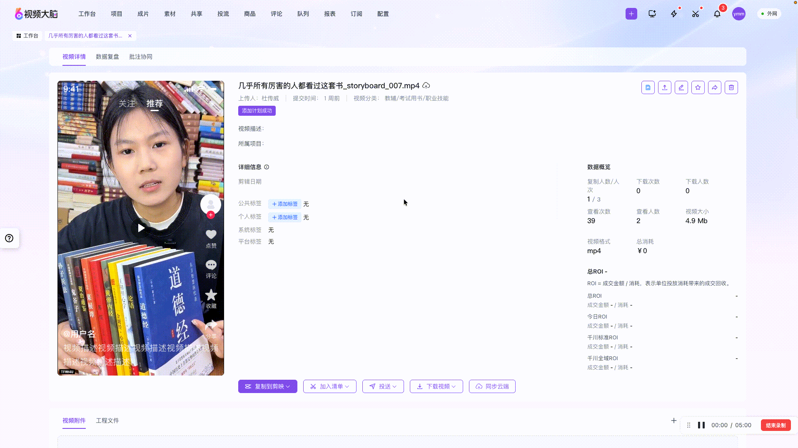
让内容投入更快变成卖货结果
从"拍完视频等投手"到"审完即投、批量复制、智能控风险"，减少内容到广告之间的执行断档和预算浪费。
内容到广告，一步衔接
成片审核通过直接推送至千川、腾讯广告、磁力金牛，无需下载再上传。内容团队产出和投手执行之间少一步，爆款素材更快进入卖货验证。
同样的团队，管得动更多账户
投放模板沉淀常用参数，批量计划搭建、多平台多账户统一管理。把重复操作变成可复用任务，降低对单个投手的依赖。
预算向有效素材集中
实时监控计划消耗与转化，低效素材自动清理、亏钱计划及时止损，验证好的视频快速复制放量，让整体 ROI 更可控。
商品管理
每个商品配专属内容，数据全关联
内容电商的核心是"货"。系统以商品为中心，把素材、成片、投放数据全部关联到具体商品上。哪条视频在带哪件货、这件货投了多少钱、ROI多少，清清楚楚。告别"我知道有视频在跑，但不知道在带哪件货"的混乱。

投放推送
审完直接推去投，不用下载再上传
视频审过了直接推到千川、腾讯广告、快手磁力金牛，不需要下载到本地再上传。多平台账户统一在一个后台管理，添加、删除、切换账号一键完成。从"审完"到"开投"，原来需要半小时，现在只需几秒。

计划搭建
常用计划存模板，批量复制不再手动重复
推商品、推直播、标准推广，主流投放场景全覆盖。常用计划存成模板，下次直接套用，一次建100个计划也不慌。预算、出价、定向一键设置，投手的工作效率提升10倍。
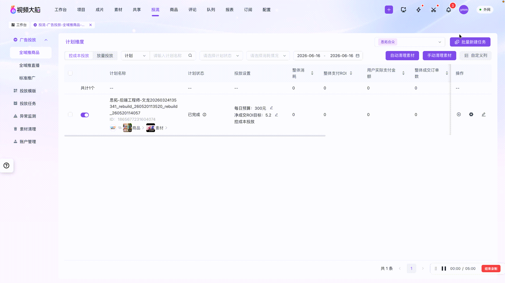
智能优化
亏钱的自动停，好素材自动放大
不用24小时盯着后台。系统实时监控每个计划的消耗和转化，亏钱的计划自动预警，跑不动的素材自动清理，验证好的视频快速批量扩投。预算只花在刀刃上，ROI持续提升。
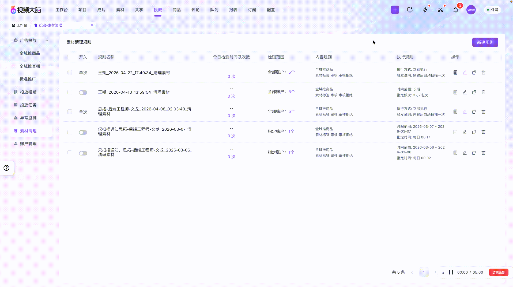
不是看数字，而是指导下一步
让数据驱动每一轮决策，从"凭感觉决策"升级为"用数据说话"
团队产出看得见
每个人这周出了几片、几条投了广告、ROI怎么样，一清二楚
创作不再拍脑袋
哪类素材跑得好、哪种开头转化高，数据告诉你下一批拍什么
亏钱及时止损
哪条视频投了不出单、哪个计划一直在亏钱，第一时间发现及时停，把预算集中在有效内容上
数据总览
一张图看懂全部数据
不再需要打开五六个后台看数据。系统把素材、成片、广告计划等维度的数据整合在一张视图里，哪个素材跑得好、哪条视频ROI高、哪个计划值得继续投，一目了然。数据驱动决策，从"凭感觉"升级为"用数据说话"。
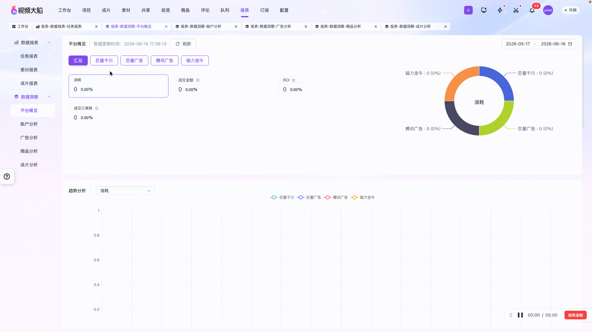
团队报表
团队产出看得清、管得住
管理者最想知道的：团队这周产出了多少、谁拖了稿、素材利用率怎么样。系统自动生成任务完成率、出片量统计、人员排名等报表，团队管理从"问"升级为"看"，问题早发现、早解决。
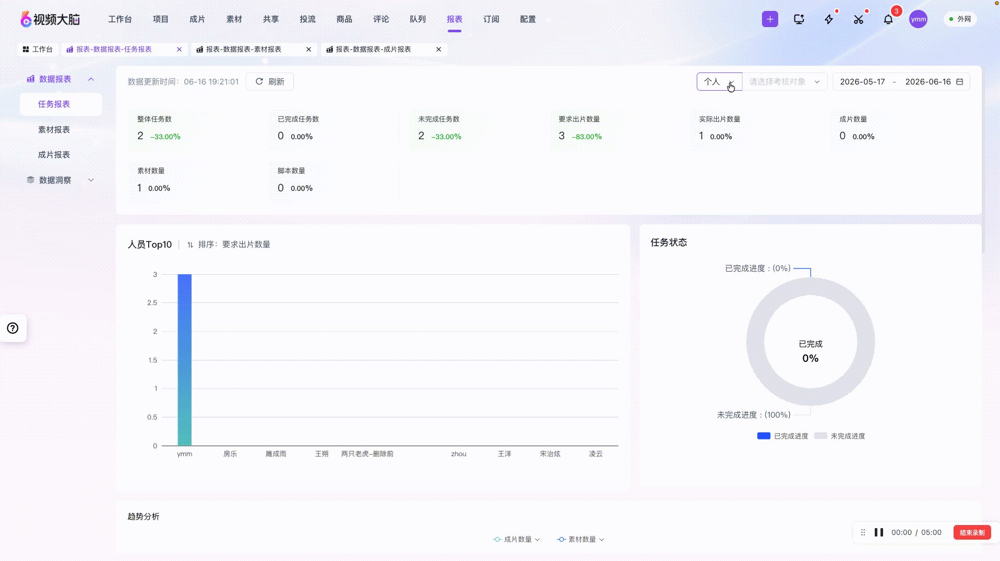
效果分析
哪条视频在带哪件货，数据给你答案
拍了一百条视频，不知道哪条在真正带货？系统把商品和视频做关联分析，哪条视频在带哪件货、哪件货值得继续投、哪些视频ROI高，全部用数据说话。下一步拍什么、投什么，不再拍脑袋。

一个入口全搞定，为六大模块提供稳定的底层支撑
团队人再多也不怕乱，从小作坊升级为正规军
团队从小作坊变正规军
谁做什么、谁能看谁，分工权限清清楚楚
重要消息主动推
重要消息主动推：爆款出了、计划亏了、任务延期了，一条都不会漏
六大模块一体化
一个后台全搞定：传素材、审片、投广告、看数据，不用切来切去
工作台
打开就知道今天该干什么
每个团队成员都有自己的工作台。今日待办、本周进度、常用功能快捷入口，打开页面就知道今天该干什么。任务到期自动提醒，审批请求主动推送，工作不再遗漏。

项目协同
一个项目全搞定
以项目为单位组织工作，每个项目包含目标、任务、素材、成片、商品、数据、成员。我参与的、我负责的、标星关注的项目，分类清晰。团队从小作坊升级为正规军，工作不再混乱。
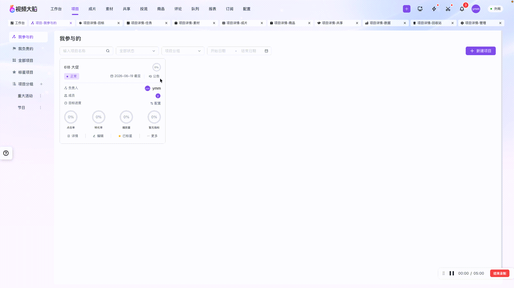
权限与通知
谁能看谁、什么时候推，自由配置
团队人多了最怕乱。系统支持灵活的角色权限管理：编导能看素材不能改设置，剪辑能上传不能删别人的，投手只能看投放数据。通知也可以自定义订阅，想要哪种通知、什么时候推，都由你定。

评论管理
批量管理评论区，辅助内容运营
评论模块支持评论内容、常用语、隐藏内容、隐藏规则，辅助内容运营。批量回复、隐藏和规则设置让评论区管理更高效，减少人工逐条处理的时间。
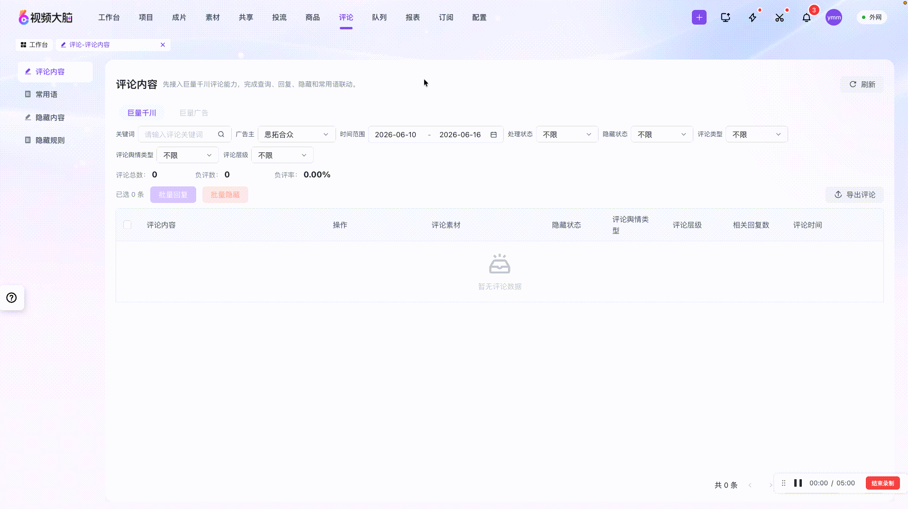
队列能力
批量任务排队，资源不冲突
队列能力承接上传、待投流、待剪辑等批量任务状态。任务按优先级排队执行，避免资源冲突，让大规模内容生产有序运转。

上传追踪
实时追踪上传进度和状态
上传列表可追踪等待上传、上传中、上传成功、上传失败等状态。每个文件的上传进度一目了然，失败任务可快速重试，确保素材准时入库。
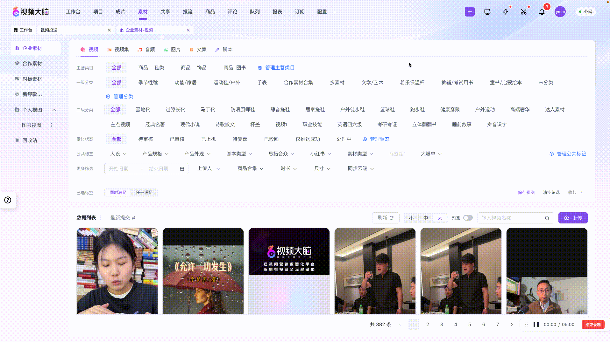
通知中心
所有消息统一查看，不漏掉任何重要信息
通知中心集中承接任务、投放、成片、批注、分享、状态、预警等消息。所有消息统一查看，不用在多个系统间来回切换。
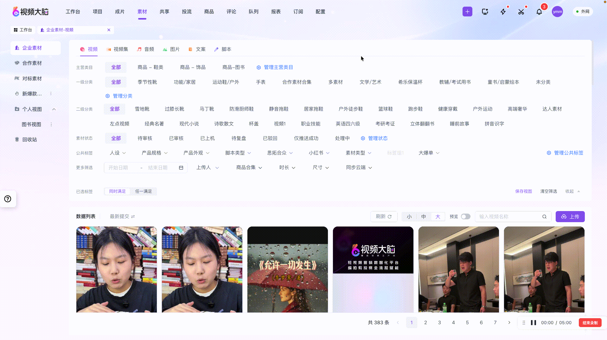
产品架构全景
六大模块紧密协作，形成从"方向洞察"到"持续复制爆款"的完整经营闭环